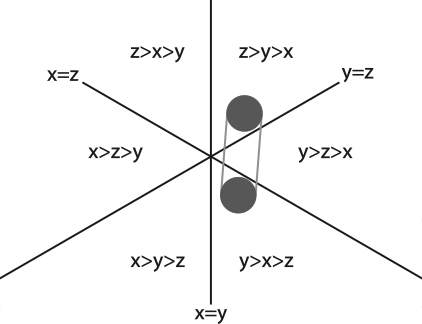

How I spent my summer
we wrote a paper in three weeks
Alex Gavryushkin
September 20, 2017Genetic interactions
- All commonly used models of sequence evolution assume independence between sites.
- However, there is biological evidence that in many cases sites are not independent.
- Furthermore, this non-independence is used more and more widely, e.g. in drug discovery and design using synthetic lethal gene pairs.

That is, the set of genotypes is $\mathcal G = \{0,1\}^{n}$.
A fitness landscape is a function $w:\mathcal G \to \mathbb R^+$.
For $g \in \mathcal G$, $w(g)$ is called the fitness of genotype $g$ and denoted $w_g$.
Epistasis, or gene interaction,
is defined as the deviation from the additive expectation of allelic effects: $$u_{11} = w_{00} + w_{11} - (w_{01} + w_{10})$$Higher order interactions: interaction coordinates
$$ \scriptsize \begin{align*} u_{011}&= w_{000}+w_{100}+w_{011}+w_{111}−(w_{001}+w_{101})−(w_{010}+w_{110})\\ u_{101}&= w_{000}+w_{010}+w_{101}+w_{111}−(w_{001}+w_{011})−(w_{100}+w_{110})\\ u_{110}&= w_{000}+w_{001}+w_{110}+w_{111}−(w_{010}+w_{011})−(w_{100}+w_{101})\\ u_{111}&= w_{000}+w_{011}+w_{101}+w_{110}−(w_{001}+w_{010}+w_{100}+w_{111})\\ \end{align*} $$
Beerenwinkel, Niko, Lior Pachter, and Bernd Sturmfels. "Epistasis and shapes of fitness landscapes." Statistica Sinica (2007): 1317-1342.
Higher order interactions: circuits
$$ \scriptsize \begin{align*} a&= w_{000}-w_{010}-w_{100}+w_{110} & m&=w_{001}+w_{010}+w_{100}-w_{111}-2w_{000}\\ b&=w_{001}-w_{011}-w_{101}+w_{111} & n&=w_{011}+w_{101}+w_{110}-w_{000}-2w_{111}\\ c&=w_{000}-w_{001}-w_{100}+w_{101} & o&=w_{010}+w_{100}+w_{111}-w_{001}-2w_{110}\\ d&=w_{010}-w_{011}-w_{110}+w_{111} & p&=w_{000}+w_{011}+w_{101}-w_{110}-2w_{001}\\ e&=w_{000}-w_{001}-w_{010}+w_{011} & q&=w_{001}+w_{100}+ w_{111}-w_{010}-2w_{101}\\ f&=w_{100}-w_{101}-w_{110}+w_{111} & r&=w_{000}+w_{011}+ w_{110}-w_{101}-2w_{010}\\ g&=w_{000}-w_{011}-w_{100}+w_{111} & s&=w_{000}+w_{101}+ w_{110}-w_{011}-2w_{100}\\ h&=w_{001}-w_{010}-w_{101}+w_{110} & t&=w_{001}+w_{010}+w_{111}-w_{100}-2w_{011}\\ i&=w_{000}-w_{010}-w_{101}+w_{111}\\ j&=w_{001}-w_{011}-w_{100}+w_{110}\\ k&=w_{000}-w_{001}-w_{110}+w_{111}\\ l&=w_{010}-w_{011}-w_{100}+w_{101}\\ \end{align*} $$Beerenwinkel, Niko, Lior Pachter, and Bernd Sturmfels. "Epistasis and shapes of fitness landscapes." Statistica Sinica (2007): 1317-1342.
Problem: What if no (credible) fitness measurements are available?
Like in this malaria drug resistance data set:

Ogbunugafor et al. Malar. J. 2016
Why is fitness hard to measure?
When partial order implies interaction?
We say that a partial order $\prec$ on the set of genotypes $\mathcal G = \{g_1,\ldots, g_m\}$ implies positive $f$-interaction if \[ f(w_{g_1},\ldots, w_{g_m}) > 0 \] whenever the genotypes $\mathcal G$ are ordered according to $\prec$.
Theorem 2. A partial order implies $f$-interaction exactly if all its total extensions do.
Let $N$ be the set of genotypes with negative coefficients in $f$ and $P$ with positive. We can think of a partial order $\prec$ as of a directed bipartite graph $G$ on $N \cup P$.
Conjecture 3. Theorem 3. A partial order $\prec$ implies interaction iff the graph $G$ has a perfect matching.
Crona, Gavryushkin, Greene, and Beerenwinkel. Inferring genetic interactions from comparative fitness data. bioRxiv. eLife, under revision.
Lienkaemper, Drain, Lamberti, and Gavryushkin. Inferring genetic interactions from partial fitness orders. bioRxiv, to appear this month.
Theorem 5. Let $U\subset\mathbb R^k$ be a path connected, open set which has a nonempty intersection with the cones $C_{\mathcal A}$ and $C_{\mathcal B}$, where $\mathcal A$ and $\mathcal B$ are linear orders on $k$ elements. Then there exist linear orders $\mathcal L_1 = \mathcal A, \ldots, \mathcal L_n = \mathcal B$ such that $\mathcal L_i$ and $\mathcal L_{i+1}$ differ by one adjacent transposition and $U \cap C_{\mathcal L_i} \ne \varnothing$ for each $1 \leq i < n$.

Major challenges
- Triangulations of the convex hull?
- What are the canonical interactions?
- How to interpret the result?
Applications
-
HIV-1
-
Antibiotic resistance
-
Gut microbiome (with Will Ludington, UC Berkeley)
-
Synthetic lethality
-
Knockdown cell lines
Methodologically, this allows us to advise further measurements (experiments) for incomplete data sets, thus reducing the number of potential experiments significantly.


 $\small f(\bar w) = w_{000} + w_{011} + w_{101} + w_{110} - w_{001} - w_{010} - w_{100} - w_{111}$
$\small f(\bar w) = w_{000} + w_{011} + w_{101} + w_{110} - w_{001} - w_{010} - w_{100} - w_{111}$
Want to learn more?
We've got you covered!- All my talks (including this one) are at
http://alex.gavruskin.com/talks
- Papers are at
http://alex.gavruskin.com/publications
- Software (and manuscripts in-progress) here:
https://github.com/gavruskin
References
- Beerenwinkel, Niko, Lior Pachter, and Bernd Sturmfels.
"Epistasis and shapes of fitness landscapes."
Statistica Sinica (2007): 1317-1342.
- Crona, Kristina, Alex Gavryushkin, Devin Greene, and Niko Beerenwinkel.
"Inferring genetic interaction from comparative fitness data."
eLife, under revision.
bioRxiv, doi: 10.1101/137372.
- Lienkaemper, Caitlin, Lisa Lamberti, James Drain, Niko Beerenwinkel, and Alex Gavryushkin. "Inferring genetic interactions from partial fitness orders." bioRxiv, doi: 10.1101/180976. J Math Bio, under rejection.
Acknowledgments